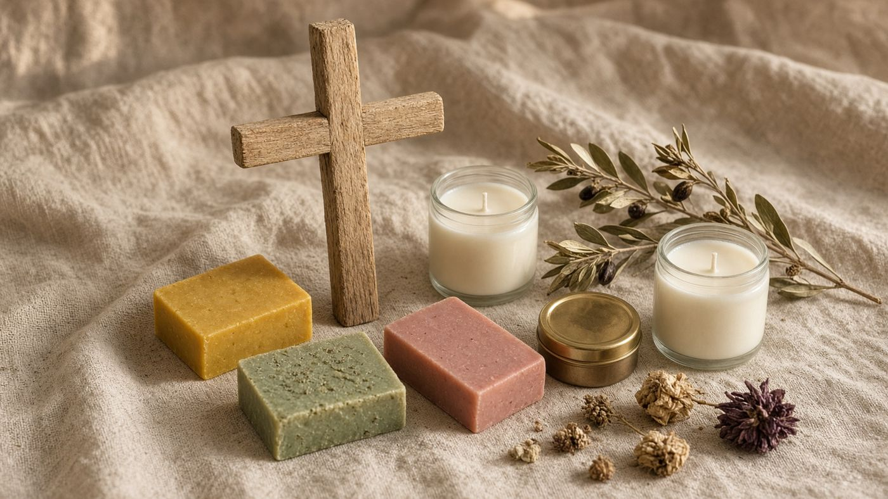

Faith · Scripture Garden
Named from the page. Poured at the homestead.
Frankincense and myrrh, rose of Sharon, and a lamp for the table. Hyssop Wash is rosemary, lavender, and lemon — no hyssop oil. Bethany Balm is lavender and frankincense. Soap, cosmetic, and candle. The prayer is yours.
The bars
Soap named from the page
Magi, hyssop, and the rose of Sharon — poured on the same olive, coconut, and tallow the rest of the house uses.


The verse names the good
- Magi Bar. Matthew 2:11. Named for the gifts of gold, frankincense, and myrrh. The bar does not bless.
- Hyssop Wash. Psalm 51:7. Named from the psalm. Rosemary, lavender, and lemon. No hyssop oil. The bar does not purge.
- Rose of Sharon Bar. Song of Solomon 2:1. Named for the rose of Sharon. The song stays the song.
- Bethany Balm. John 12:3. Named for the house at Bethany. Lavender and frankincense. Not nard.
- Magi Candle, 8 oz. Matthew 2:11. Named for the gifts. A home candle. It does not bless or pray.
- Lampstand Candle, 8 oz. Matthew 5:15. Named for a lamp on a stand. Not the tabernacle lamp. Not a sacrament.
- Table Sampler. Matthew 2:11 · John 12:3. A gift set named from those pages. It does not perform the work.
Tin and wick
A tin, and a choice of wick
Clear jar or amber jar.


How we name them
- We print the scripture names on the shelf. The oils are what is in the pot.
- Frankincense, myrrh, rosemary, lavender, rose, cedar, lemon, orange.
- Cotton wick in the Magi and Lampstand jars.
- The sampler is a gift box. It is not a kit for ministry.
What we will not print
- We will not print that a bar anoints, a tin consecrates, or a candle prays.
- No holy anointing oil. We do not copy the Exodus formula for sale.
- Soap, cosmetic, and candle. The prayer is yours.